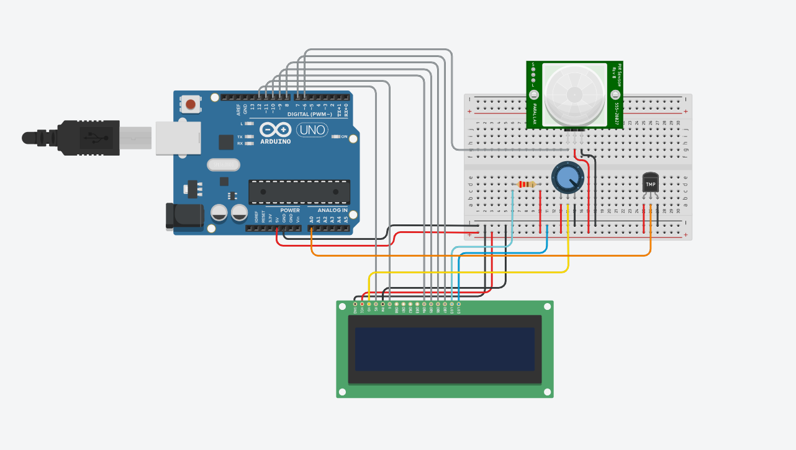

É uma forma de onda eletromagnética, invisível ao olho humano, associada à transferência de energia térmica.
Uma parte do espectro eletromagnético
O infravermelho está localizado depois da luz vermelha no espectro eletromagnético. Assim como outras ondas eletromagnéticas, pode se propagar no vácuo: não precisa de ar ou de outro meio material.
Infravermelho
Associado à radiação térmica emitida pelos corpos.
02 / MODELO MICROSCÓPICO
Por que objetos aquecidos emitem radiação?
A temperatura está relacionada à energia cinética média das partículas. Todo corpo acima do zero absoluto emite radiação térmica.
Explore a temperatura
Altere a temperatura e observe a representação ilustrativa do movimento das partículas.
Modelo visual ilustrativo; não representa uma simulação molecular em escala real.
Lei de Stefan-Boltzmann
A potência emitida por uma superfície depende de sua emissividade, área e da quarta potência da temperatura absoluta.
P = ε · σ · A · T4
P — potência de radiação emitida, em watts (W).
ε — emissividade da superfície.
σ — constante de Stefan-Boltzmann.
A — área da superfície, em metros quadrados (m²).
T — temperatura absoluta, em kelvin (K).
Quanto maior a temperatura absoluta, maior a emissão: a potência é proporcional a T⁴. A emissão também depende da área e das características da superfície.
Use a calculadora para observar como as variáveis alteram a potência emitida.
Potência emitida estimada—Temperatura absoluta: 313,15 K
A expressão calcula a potência emitida. Para obter a troca líquida com o ambiente, também é necessário considerar a radiação recebida.
03 / APLICAÇÃO
Por que a piscina perde calor mesmo sem vento?
Há diferentes mecanismos de transferência de energia térmica acontecendo ao mesmo tempo. A água emite radiação, mas também absorve parte da radiação que recebe do ambiente: a troca líquida depende da diferença entre o que emite e o que absorve.
MECANISMO 01
Radiação
A superfície da piscina emite ondas eletromagnéticas, principalmente na faixa do infravermelho. Esse processo não depende da presença de vento.
Mesmo sem vento, radiação e evaporação continuam ocorrendo. Também pode existir convecção natural, causada por diferenças de temperatura e densidade do ar.
04 / EXPERIMENTO E INSTRUMENTAÇÃO
Da teoria à prática: montagem com Arduino
Esta montagem no Tinkercad reúne sensores e um display conectados a um Arduino Uno. Ela pode servir como ponto de partida para explorar a leitura de condições do ambiente e a apresentação de informações em um projeto experimental.

Esquema de ligação reproduzido a partir da montagem enviada do Tinkercad.
COMPONENTES VISÍVEIS
O que compõe o circuito?
Arduino UnoPlaca microcontroladora que executa o programa e coordena as entradas e saídas.
Sensor PIRDetecta variações de infravermelho associadas ao movimento de pessoas ou objetos quentes.
Sensor TMPSensor analógico de temperatura, usado para obter uma leitura térmica do ambiente ou do objeto monitorado.
PotenciômetroComponente ajustável; nesta montagem está junto ao circuito do display, podendo regular o contraste do LCD.
Display LCDPermite apresentar informações e valores medidos pelo projeto.
Protoboard e jumpersFacilitam as conexões elétricas sem solda durante a montagem e os testes.
Como isso se relaciona ao infravermelho?
O sensor PIR utiliza a variação da radiação infravermelha recebida para identificar movimento. Isso cria uma conexão prática com o tema estudado: a radiação infravermelha é invisível, mas pode ser detectada por dispositivos eletrônicos.
Já o sensor TMP mede temperatura por um princípio eletrônico próprio. Ele não mede diretamente a radiação infravermelha emitida pela piscina.
A imagem mostra a disposição dos componentes e as ligações, mas não inclui o código do Arduino. Portanto, o comportamento final do circuito e as informações exibidas no LCD dependem do programa carregado na placa.
05 / EFICIÊNCIA ENERGÉTICA
Como uma cobertura reduz as perdas?
A cobertura térmica funciona como uma barreira para as trocas de energia entre a água e o ambiente.
Compare a situação
Ative a cobertura para visualizar, de forma qualitativa, como ela ajuda a reduzir as perdas de energia.
↑↑
Cobertura desativada: a evaporação ocorre mais livremente.
Principais benefícios
Reduz a evaporação da água.
Diminui a troca de calor com o ar.
Pode reduzir a perda por radiação, dependendo do material.
Ajuda a manter a temperatura e reduzir a necessidade de aquecimento.
O resultado depende das propriedades e da construção da cobertura utilizada.
PARA CONCLUIR
Compreender a energia é o primeiro passo para economizá-la.
Todo corpo acima do zero absoluto emite radiação térmica. A piscina perde energia por radiação, evaporação e convecção; soluções como coberturas ajudam a reduzir essas trocas.